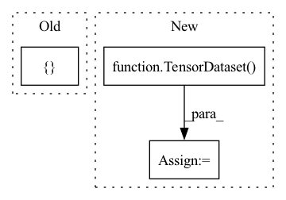

Pattern ID :28487
Before Change
assert b_ptr_new in opt_params_ptrs
def create_scenario(self):
train_transform = transforms.Compose([
RandomCrop(28, padding=4),
ToTensor(),
transforms.Normalize((0.1307,), (0.3081,))After Change
train_X, test_X, train_y, test_y = train_test_split(
X, y, train_size=0.6, shuffle=True, stratify=y)
train_dataset = TensorDataset( train_X, train_y)
test_dataset = TensorDataset(test_X, test_y)
return nc_scenario(train_dataset, test_dataset, 5, task_labels=False)
In pattern: SUPERPATTERN
Frequency: 4
Non-data size: 3
Instances Fragment ID: 84364679
Project Name: continualai/avalanche
Commit Name: 51d497f2f4fa3737cf154e7afc2aeebeab71b4f9
Time: 2021-02-04
Author: antonio.carta@di.unipi.it
File Name: tests/test_plugins.py
M Class Name: PluginTests
N Class Name: PluginTests
M Method Name: create_scenario(1)
N Method Name: create_scenario(1)
M Parent Class: unittest.TestCase
N Parent Class: unittest.TestCase
M File Name: tests/test_plugins.py
N File Name: tests/test_plugins.py
M Start Line: 141
M End Line: 156
N Start Line: 147
N End Line: 162
Before Change
idx.append(k)
self.class_dataset = torch.utils.data.Subset(self.mix_dataset, idx)
layer_output_all = torch.empty([] ) // TODO
for i, data in enumerate(self.class_dataset):
_input, _label = self.model.get_data(data)
layer_output = self.model.get_layer(_input, layer_output=self.preprocess_layer)After Change
class_input, class_label = dataset_to_list(class_dataset)
class_input = torch.stack(class_input)
class_label = torch.as_tensor(class_label, dtype=torch.long)
class_dataset = TensorDataset( class_input, class_label)
class_dataloader = self.dataset.get_dataloader(mode="train", dataset=self.class_dataset, num_workers=0)
layer_output_all = [] // TODO
for i, data in enumerate(class_dataloader): Fragment ID: 84364687
Project Name: ain-soph/trojanzoo
Commit Name: 4adb8ae3e90425855448bfd8fc212f8d91f5332c
Time: 2021-06-01
Author: ain-soph@live.com
File Name: trojanvision/defenses/backdoor/spectral_signature.py
M Class Name: SpectralSignature
N Class Name: SpectralSignature
M Method Name: get_clean_dataloader(1)
N Method Name: get_clean_dataloader(1)
M Parent Class: BackdoorDefense
N Parent Class: BackdoorDefense
M File Name: trojanvision/defenses/backdoor/spectral_signature.py
N File Name: trojanvision/defenses/backdoor/spectral_signature.py
M Start Line: 114
M End Line: 126
N Start Line: 113
N End Line: 125
Before Change
def _get_dataloader(self, x, y, y_bin):
tensor_x = torch.Tensor(x)
tensor_y = torch.Tensor([ y, y_binAfter Change
tensor_x = torch.Tensor(x)
tensor_y = torch.Tensor(y)
tensor_bin = torch.Tensor(y_bin)
dataset = TensorDataset( tensor_x, tensor_y, tensor_bin)
data_loader = DataLoader(dataset=dataset,
batch_size=self.batch_size,
shuffle=self.shuffle)
return data_loader Fragment ID: 84364684
Project Name: uca-datalab/nilm-thresholding
Commit Name: ea6390298985c97300879b85f253253fefda38c2
Time: 2020-06-04
Author: danipg1409@gmail.com
File Name: better_nilm/model/architecture/_base.py
M Class Name: TorchModel
N Class Name: TorchModel
M Method Name: _get_dataloader(4)
N Method Name: _get_dataloader(4)
M Parent Class:
N Parent Class:
M File Name: better_nilm/model/architecture/_base.py
N File Name: better_nilm/model/architecture/_base.py
M Start Line: 62
M End Line: 64
N Start Line: 62
N End Line: 65
Before Change
assert batch_size > 0, "batch size must greater than zero."
if batch_size is None:
X_batches, y_batches = [ XAfter Change
"""
assert loss.reduction is None, "loss.reduction must be null."
dataset = TensorDataset( X, y)
data_loader = DataLoader(dataset, batch_size=batch_size)
metric = Accumulator(3)
for X_batch, y_batch in data_loader:
y_pred = model(X_batch) Fragment ID: 84364683
Project Name: nlp-greyfoss/metagrad
Commit Name: f36bd49f7ba678919f59402e3b8de05713baa035
Time: 2022-03-09
Author: jueying.szu@gmail.com
File Name: metagrad/utils.py
M Class Name: AnonimousClass
N Class Name: AnonimousClass
M Method Name: run_epoch(6)
N Method Name: run_epoch(6)
M Parent Class:
N Parent Class:
M File Name: metagrad/utils.py
N File Name: metagrad/utils.py
M Start Line: 236
M End Line: 244
N Start Line: 239
N End Line: 242